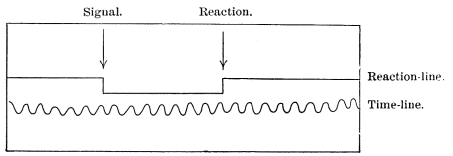
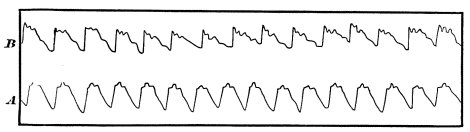

Chapter 9: Some General Conditions of Neural Activity¶
9.1 Some General Conditions of Neural Activity¶
The Nervous Discharge.—The word discharge is constantly used, and must be used in this book, to designate the escape of a current downwards into muscles or other internal organs. The reader must not understand the word figuratively. From the point of view of dynamics the passage of a current out of a motor cell is probably altogether analogous to the explosion of a gun. The matter of the cell is in a state of internal tension, which the incoming current resolves, tumbling the molecules into a more stable equilibrium and liberating an amount of energy which starts the current of the outgoing fibre. This current is stronger than that of the incoming fibre. When it reaches the muscle it produces an analogous disintegration of pent-up molecules and the result is a stronger effect still. Matteuci found that the work done by a muscle's contraction was 27,000 times greater than that done by the galvanic current which stimulated its motor nerve. When a frog's leg-muscle is made to contract, first directly, by stimulation of its motor nerve, and second reflexly, by stimulation of a sensory nerve, it is found that the reflex way requires a stronger current and is more tardy, but that the contraction is stronger when it does occur. These facts prove that the cells in the spinal cord through which the reflex takes place offer a resistance which has first to be overcome, but that a relatively violent outward current outwards then escapes from them. What is this but an explosive discharge on a minute scale?
Reaction-time.—The measurement of the time required for the discharge is one of the lines of experimental investigation most diligently followed of late years. Helmholtz led the way by discovering the rapidity of the outgoing current in the sciatic nerve of the frog. The methods he used were soon applied to sensory reactions, and the results caused much popular admiration when described as measurements of the 'velocity of thought.' The phrase 'quick as thought' had from time immemorial signified all that was wonderful and elusive of determination in the line of speed; and the way in which Science laid her doomful hand upon this mystery reminded people of the day when Franklin first 'eripuit cœlo fulmen,' foreshadowing the reign of a newer and colder race of gods. I may say, however, immediately, that the phrase 'velocity of thought' is misleading, for it is by no means clear in any of the cases what particular act of thought occurs during the time which is measured. What the times in question really represent is the total duration of certain reactions upon stimuli. Certain of the conditions of the reaction are prepared beforehand; they consist in the assumption of those motor and sensory tensions which we name the expectant state. Just what happens during the actual time occupied by the reaction (in other words, just what is added to the preëxistent tensions to produce the actual discharge) is not made out at present, either from the neural or from the mental point of view.
The method is essentially the same in all these investigations. A signal of some sort is communicated to the subject, and at the same instant records itself on a time-registering apparatus. The subject then makes a muscular movement of some sort, which is the 'reaction,' and which also records itself automatically. The time found to have elapsed between the two records is the total time of that reaction. The time-registering instruments are of various types. One type is that of the revolving drum covered with smoked paper, on which one electric pen traces a line which the signal breaks and the 'reaction' draws again; whilst another electric pen (connected with a rod of metal vibrating at a known rate) traces alongside of the former line a 'time-line' of which each undulation or link stands for a certain fraction of a second, and against which the break in the reaction-line can be measured. Compare Fig. 49, where the line is broken by the signal at the first arrow, and continued again by the reaction at the second. The machine most often used is Hipp's chronoscopic clock. The hands are placed at zero, the signal starts them (by an electric connection), and the reaction stops them. The duration of their movement, down to 1000ths of a second, is then read off from the dial-plates.

Simple Reactions.—It is found that the reaction-time differs in the same person according to the direction of his expectant attention. If he thinks as little as possible of the movement which he is to make, and concentrates his mind upon the signal to be received, it is longer; if, on the contrary, he bends his mind exclusively upon the muscular response, it is shorter. Lange, who first noticed this fact when working in Wundt's laboratory, found his own 'muscular' reaction-time to average 0´´.123, whilst his 'sensorial' reaction-time averaged as much as 0´´.230. It is obvious that experiments, to have any comparative value, must always be made according to the 'muscular' method, which reduces the figure to its minimum and makes it more constant. In general it lies between one and two tenths of a second. It seems to me that under these circumstances the reaction is essentially a reflex act. The preliminary making-ready of the muscles for the movement means the excitement of the paths of discharge to a point just short of actual discharge before the signal comes in. In other words, it means the temporary formation of a real 'reflex-arc' in the centres, through which the incoming current instantly can pour out again. But when, on the other hand, the expectant attention is exclusively addressed to the signal, the excitement of the motor tracts can only begin after this latter has come in, and under this condition the reaction takes more time. In the hair-trigger condition in which we stand when making reactions by the 'muscular' method, we sometimes respond to a wrong signal, especially if it be of the same kind with the one we expect. The signal is but the spark which touches off a train already laid. There is no thought in the matter; the hand jerks by an involuntary start.
These experiments are thus in no sense measurements of the swiftness of thought. Only when we complicate them is there a chance for anything like an intellectual operation to occur. They may be complicated in various ways. The reaction may be withheld until the signal has consciously awakened a distinct idea (Wundt's discrimination-time, association-time), and may then be performed. Or there may be a variety of possible signals, each with a different reaction assigned to it, and the reacter may be uncertain which one he is about to receive. The reaction would then hardly seem to occur without a preliminary recognition and choice. Even here, however, the discrimination and choice are widely different from the intellectual operations of which we are ordinarily conscious under those names. Meanwhile the simple reaction-time remains as the starting point of all these superinduced complications, and its own variations must be briefly passed in review.
The reaction-time varies with the individual and his age. Old and uncultivated people have it long (nearly a second, in an old pauper observed by Exner). Children have it long (half a second, according to Herzen).
Practice shortens it to a quantity which is for each individual a minimum beyond which no farther reduction can be made. The aforesaid old pauper's time was, after much practice, reduced to 0.1866 sec.
Fatigue lengthens it, and concentration of attention shortens it. The nature of the signal makes it vary. I here bring together the averages which have been obtained by some observers:
| Hirsch. | Hankel. | Exner. | Wundt. | |
|---|---|---|---|---|
| Sound | 0.149 | 0.1505 | 0.1360 | 0.167 |
| Light | 0.200 | 0.2246 | 0.1506 | 0.222 |
| Touch | 0.182 | 0.1546 | 0.1337 | 0.213 |
It will be observed that sound is more promptly reacted on than either sight or touch. Taste and smell are slower than either. The intensity of the signal makes a difference. The intenser the stimulus the shorter the time. Herzen compared the reaction from a corn on the toe with that from the skin of the hand of the same subject. The two places were stimulated simultaneously, and the subject tried to react simultaneously with both hand and foot, but the foot always went quickest. When the sound skin of the foot was touched instead of the corn, it was the hand which always reacted first. Intoxicants on the whole lengthen the time, but much depends on the dose.
Complicated Reactions.—These occur when some kind of intellectual operation accompanies the reaction. The rational place in which to report of them would be under the head of the various intellectual operations concerned. But certain persons prefer to see all these measurements bunched together regardless of context; so, to meet their views, I give the complicated reactions here.
When we have to think before reacting it is obvious that there is no definite reaction-time of which we can talk—it all depends on how long we think. The only times we can measure are the minimum times of certain determinate and very simple intellectual operations. The time required for discrimination has thus been made a subject of experimental measurement. Wundt calls it Unterscheidungszeit. His subjects (whose simple reaction-time had previously been determined) were required to make a movement, always the same, the instant they discerned which of two or more signals they received. The excess of time occupied by these reactions over the simple reaction-time, in which only one signal was used and known in advance, measured, according to Wundt, the time required for the act of discrimination. It was found longer when four different signals were irregularly used than when only two were used. When two were used (the signals being the sudden appearance of a black or of a white object), the average times of three observers were respectively (in seconds)
| 0.050 | 0.047 | 0.079 |
|---|---|---|
When four signals were used, a red and a green light being added to the others, it became, for the same observers,
| 0.157 | 0.073 | 0.132 |
|---|---|---|
Prof. Cattell found he could get no results by this method, and reverted to one used by observers previous to Wundt and which Wundt had rejected. This is the einfache Wahlmethode, as Wundt calls it. The reacter awaits the signal and reacts if it is of one sort, but omits to act if it is of another sort. The reaction thus occurs after discrimination; the motor impulse cannot be sent to the hand until the subject knows what the signal is. Reacting in this way, Prof. Cattell found the increment of time required for distinguishing a white signal from no signal to be, in two observers,
| 0.030 | and | 0.050; |
|---|---|---|
that for distinguishing one color from another was similarly
| 0.100 | and | 0.110; |
|---|---|---|
that for distinguishing a certain color from ten other colors,
| 0.105 | and | 0.117; |
|---|---|---|
that for distinguishing the letter A in ordinary print from the letter Z,
| 0.142 | and | 0.137; |
|---|---|---|
that for distinguishing a given letter from all the rest of the alphabet (not reacting until that letter appeared),
| 0.119 | and | 0.116; |
|---|---|---|
that for distinguishing a word from any of twenty-five other words, from
| 0.118 | to | 0.158 sec. |
|---|---|---|
—the difference depending on the length of the words and the familiarity of the language to which they belonged.
Prof. Cattell calls attention to the fact that the time for distinguishing a word is often but little more than that for distinguishing a letter: "We do not, therefore," he says, "distinguish separately the letters of which a word is composed, but the word as a whole. The application of this in teaching children to read is evident."
He also finds a great difference in the time with which various letters are distinguished, E being particularly bad.
The time required for association of one idea with another has been measured. Gallon, using a very simple apparatus, found that the sight of an unforeseen word would awaken an associated 'idea' in about ⅚ of a second. Wundt next made determinations in which the 'cue' was given by single-syllabled words called out by an assistant. The person experimented on had to press a key as soon as the sound of the word awakened an associated idea. Both word and reaction were chronographically registered, and the total time-interval between the two amounted, in four observers, to 1.009, 0.896, 1.037, and 1.154 seconds respectively. From this the simple reaction-time and the time of merely identifying the word's sound (the 'apperception-time,' as Wundt calls it) must be subtracted, to get the exact time required for the associated idea to arise. These times were separately determined and subtracted. The difference, called by Wundt association-time, amounted, in the same four persons, to 706, 723, 752, and 874 thousandths of a second respectively. The length of the last figure is due to the fact that the person reacting was an American, whose associations with German words would naturally be slower than those of natives. The shortest association-time noted was when the word 'Sturm' suggested to Wundt the word 'Wind' in 0.341 second. Prof. Cattell made some interesting observations upon the association-time between the look of letters and their names. "I pasted letters," he says, "on a revolving drum, and determined at what rate they could be read aloud as they passed by a slit in a screen." He found it to vary according as one, or more than one, letter was visible at a time through the slit, and gives half a second as about the time which it takes to see and name a single letter seen alone. The rapidity of a man's reading is of course a measure of that of his associations, since each seen word must call up its name, at least, ere it is read. "I find," says Prof. Cattell, "that it takes about twice as long to read (aloud, as fast as possible) words which have no connection, as words which make sentences, and letters which have no connection, as letters which make words. When the words make sentences and the letters words, not only do the processes of seeing and naming overlap, but by one mental effort the subject can recognize a whole group of words or letters, and by one will-act choose the motions to be made in naming, so that the rate at which the words and letters are read is really only limited by the maximum rapidity at which the speech-organs can be moved.... For example, when reading as fast as possible the writer's rate was, English 138, French 167, German 250, Italian 327, Latin 434, and Greek 484; the figures giving the thousandths of a second taken to read each word. Experiments made on others strikingly confirm these results. The subject does not know that he is reading the foreign language more slowly than his own; this explains why foreigners seem to talk so fast....
"The time required to see and name colors and pictures of objects was determined in the same way. The time was found to be about the same (over ½ sec.) for colors as for pictures, and about twice as long as for words and letters. Other experiments I have made show that we can recognize a single color or picture in a slightly shorter time than a word or letter, but take longer to name it. This is because, in the case of words and letters, the association between the idea and the name has taken place so often that the process has become automatic, whereas in the case of colors and pictures we must by a voluntary effort choose the name."
Dr. Romanes has found "astonishing differences in the maximum rate of reading which is possible to different individuals, all of whom have been accustomed to extensive reading. That is to say, the difference may amount to 4 to 1; or, otherwise stated, in a given time one individual may be able to read four times as much as another. Moreover, it appeared that there was no relationship between slowness of reading and power of assimilation; on the contrary, when all the efforts are directed to assimilating as much as possible in a given time, the rapid readers (as shown by their written notes) usually give a better account of the portions of the paragraph which have been compassed by the slow readers than the latter are able to give; and the most rapid reader I have found is also the best at assimilating. I should further say," Dr. R. continues, "that there is no relationship between rapidity of perception as thus tested and intellectual activity as tested by the general results of intellectual work; for I have tried the experiment with several highly distinguished men in science and literature, most of whom I found to be slow readers."
The degree of concentration of the attention has much to do with determining the reaction-time. Anything which baffles or distracts us beforehand, or startles us in the signal, makes the time proportionally long.
The Summation of Stimuli.—Throughout the nerve-centres it is a law that a stimulus which would be inadequate by itself to excite a nerve-centre to effective discharge may, by acting with one or more other stimuli (equally ineffectual by themselves alone) bring the discharge about. The natural way to consider this is as a summation of tensions which at last overcome a resistance. The first of them produce a 'latent excitement' or a 'heightened irritability'—the phrase is immaterial so far as practical consequences go;—the last is the straw which breaks the camel's back.
This is proved by many physiological experiments which cannot here be detailed; but outside of the laboratory we constantly apply the law of summation in our practical appeals. If a car-horse balks, the final way of starting him is by applying a number of customary incitements at once. If the driver uses reins and voice, if one bystander pulls at his head, another lashes his hind-quarters, the conductor rings the bell, and the dismounted passengers shove the car, all at the same moment, his obstinacy generally yields, and he goes on his way rejoicing. If we are striving to remember a lost name or fact, we think of as many 'cues' as possible, so that by their joint action they may recall what no one of them can recall alone. The sight of a dead prey will often not stimulate a beast to pursuit, but if the sight of movement be added to that of form, pursuit occurs. "Brücke noted that his brainless hen which made no attempt to peck at the grain under her very eyes, began pecking if the grain were thrown on the ground with force, so as to produce a rattling sound." "Dr. Allen Thomson hatched out some chickens on a carpet, where he kept them for several days. They showed no inclination to scrape, ... but when Dr. Thomson sprinkled a little gravel on the carpet, ... the chickens immediately began their scraping movements." A strange person, and darkness, are both of them stimuli to fear and mistrust in dogs (and for the matter of that, in men). Neither circumstance alone may awaken outward manifestations, but together, i.e. when the strange man is met in the dark, the dog will be excited to violent defiance. Street hawkers well know the efficacy of summation, for they arrange themselves in a line on the sidewalk, and the passer often buys from the last one of them, through the effect of the reiterated solicitation, what he refused to buy from the first in the row.

Cerebral Blood-supply.—All parts of the cortex, when electrically excited, produce alterations both of respiration and circulation. The blood-pressure somewhat rises, as a rule, all over the body, no matter where the cortical irritation is applied, though the motor zone is the most sensitive region for the purpose. Slowing and quickening of the heart are also observed. Mosso, using his 'plethysmograph' as an indicator, discovered that the blood-supply to the arms diminished during intellectual activity, and found furthermore that the arterial tension (as shown by the sphygmograph) was increased in these members (see Fig. 50). So slight an emotion as that produced by the entrance of Professor Ludwig into the laboratory was instantly followed by a shrinkage of the arms. The brain itself is an excessively vascular organ, a sponge full of blood, in fact; and another of Mosso's inventions showed that when less blood went to the legs, more went to the head. The subject to be observed lay on a delicately balanced table which could tip downward either at the head or at the foot if the weight of either end were increased. The moment emotional or intellectual activity began in the subject, down went the head-end, in consequence of the redistribution of blood in his system. But the best proof of the immediate afflux of blood to the brain during mental activity is due to Mosso's observations on three persons whose brain had been laid bare by lesion of the skull. By means of apparatus described in his book, this physiologist was enabled to let the brain-pulse record itself directly by a tracing. The intra-cranial blood-pressure rose immediately whenever the subject was spoken to, or when he began to think actively, as in solving a problem in mental arithmetic. Mosso gives in his work a large number of reproductions of tracings which show the instantaneity of the change of blood-supply, whenever the mental activity was quickened by any cause whatever, intellectual or emotional. He relates of his female subject that one day whilst tracing her brain-pulse he observed a sudden rise with no apparent outer or inner cause. She however confessed to him afterwards that at that moment she had caught sight of a skull on top of a piece of furniture in the room, and that this had given her a slight emotion.
Cerebral Thermometry.—Brain-activity seems accompanied by a local disengagement of heat. The earliest careful work in this direction was by Dr. J. S. Lombard in 1867. He noted the changes in delicate thermometers and electric piles placed against the scalp in human beings, and found that any intellectual effort, such as computing, composing, reciting poetry silently or aloud, and especially that emotional excitement such as an angry fit, caused a general rise of temperature, which rarely exceeded a degree Fahrenheit. In 1870 the indefatigable Schiff took up the subject, experimenting on live dogs and chickens by plunging thermo-electric needles into the substance of their brain. After habituation was established, he tested the animals with various sensations, tactile, optic, olfactory, and auditory. He found very regularly an abrupt alteration of the intra-cerebral temperature. When, for instance, he presented an empty roll of paper to the nose of his dog as it lay motionless, there was a small deflection, but when a piece of meat was in the paper the deflection was much greater. Schiff concluded from these and other experiments that sensorial activity heats the brain-tissue, but he did not try to localize the increment of heat beyond finding that it was in both hemispheres, whatever might be the sensation applied. Dr. Amidon in 1880 made a farther step forward, in localizing the heat produced by voluntary muscular contractions. Applying a number of delicate surface-thermometers simultaneously against the scalp, he found that when different muscles of the body were made to contract vigorously for ten minutes or more, different regions of the scalp rose in temperature, that the regions were well focalized, and that the rise of temperature was often considerably over a Fahrenheit degree. To a large extent these regions correspond to the centres for the same movements assigned by Ferrier and others on other grounds; only they cover more of the skull.
Phosphorus and Thought.—Considering the large amount of popular nonsense which passes current on this subject I may be pardoned for a brief mention of it here. 'Ohne Phosphor, kein Gedanke,' was a noted war-cry of the 'materialists' during the excitement on that subject which filled Germany in the '60s. The brain, like every other organ of the body, contains phosphorus, and a score of other chemicals besides. Why the phosphorus should be picked out as its essence, no one knows. It would be equally true to say, 'Ohne Wasser, kein Gedanke,' or 'Ohne Kochsalz, kein Gedanke'; for thought would stop as quickly if the brain should dry up or lose its NaCl as if it lost its phosphorus. In America the phosphorus-delusion has twined itself round a saying quoted (rightly or wrongly) from Professor L. Agassiz, to the effect that fishermen are more intelligent than farmers because they eat so much fish, which contains so much phosphorus. All the alleged facts may be doubted.
The only straight way to ascertain the importance of phosphorus to thought would be to find whether more is excreted by the brain during mental activity than during rest. Unfortunately we cannot do this directly, but can only gauge the amount of PO5 in the urine, and this procedure has been adopted by a variety of observers, some of whom found the phosphates in the urine diminished, whilst others found them increased, by intellectual work. On the whole, it is impossible to trace any constant relation. In maniacal excitement less phosphorus than usual seems to be excreted. More is excreted during sleep. The fact that phosphorus-preparations may do good in nervous exhaustion proves nothing as to the part played by phosphorus in mental activity. Like iron, arsenic, and other remedies it is a stimulant or tonic, of whose intimate workings in the system we know absolutely nothing, and which moreover does good in an extremely small number of the cases in which it is prescribed.
The phosphorus-philosophers have often compared thought to a secretion. "The brain secretes thought, as the kidneys secrete urine, or as the liver secretes bile," are phrases which one sometimes hears. The lame analogy need hardly be pointed out. The materials which the brain pours into the blood (cholesterin, creatin, xanthin, or whatever they may be) are the analogues of the urine and the bile, being in fact real material excreta. As far as these matters go, the brain is a ductless gland. But we know of nothing connected with liver-and kidney-activity which can be in the remotest degree compared with the stream of thought that accompanies the brain's material secretions.